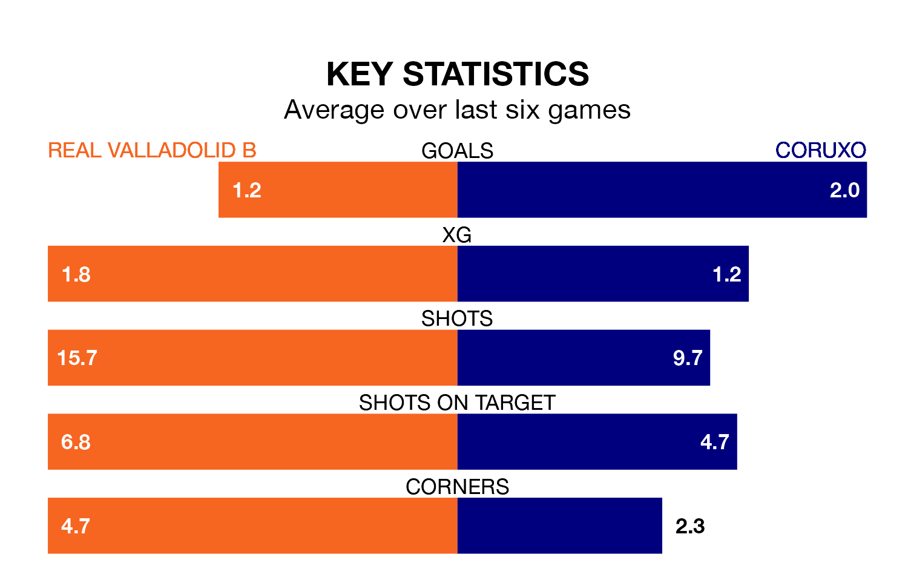

Coruxo visit Real Valladolid B at Campo 1 Anexos del José Zorrilla on Sunday on the back of four consecutive wins in Segunda División RFEF Group 1.
Coruxo have picked up 15 points from their last six games, and they face a Valladolid B side who have lost their last two matches, and collected nine points from the last possible 18.
With 22 goals in 17 games so far this season, Coruxo are the league's joint-third-highest scorers with 1.3 goals per game. But they are conceding more than average too, letting in 23 goals at a rate of 1.4 per game.
Valladolid B, meanwhile, are average scorers, with 1.2 goals per game. They have conceded 1.7 goals per game.
In the last five years, Valladolid B and Coruxo have played each other on four occasions. Valladolid B won one of them, Coruxo two, and they drew once.
On average, Valladolid B scored 1.2 goals and Coruxo 1.5 in those matches.
Their last meeting was on September 2, when Coruxo won 3-2 at home.
The away side are eighth in the table after 17 games, of which they have won eight and drawn two, earning 26 points.
The hosts are two places behind Coruxo in 10th, with seven wins and one draw putting them on 22 points.
Valladolid B's last match was on January 7, a 2-0 loss against CD Guijuelo.
Coruxo beat Gimnástica Torrelavega 3-1 last time out, also on Sunday.
Updated: 10:50, 10/01/24